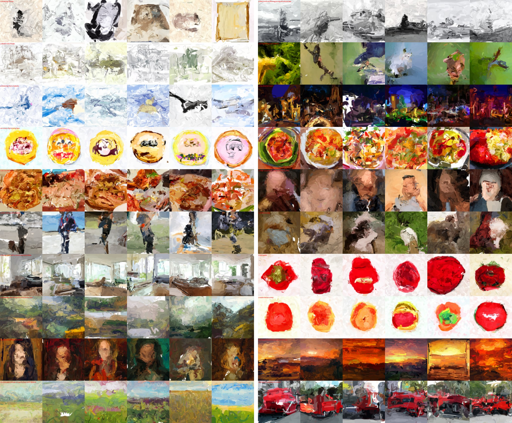
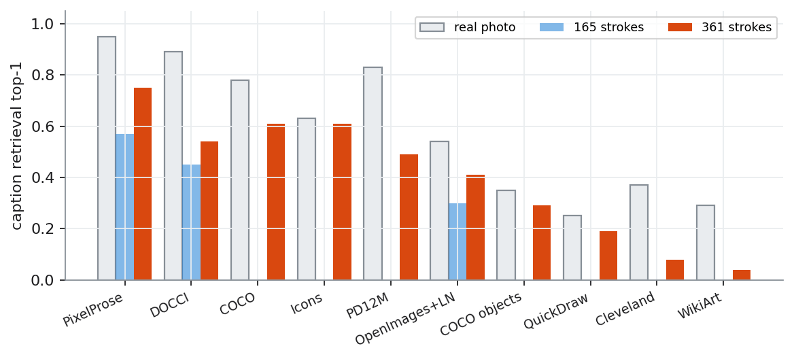
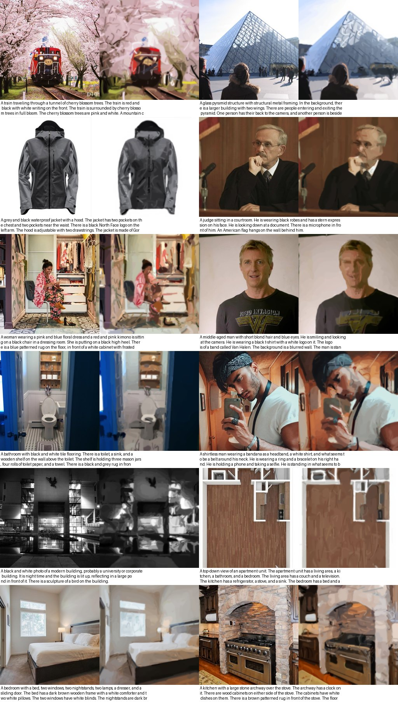
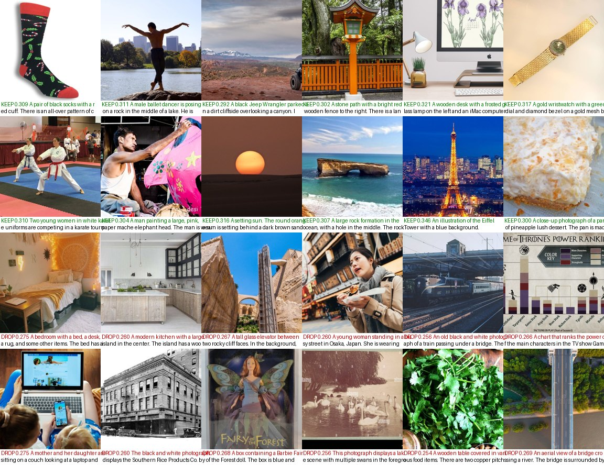
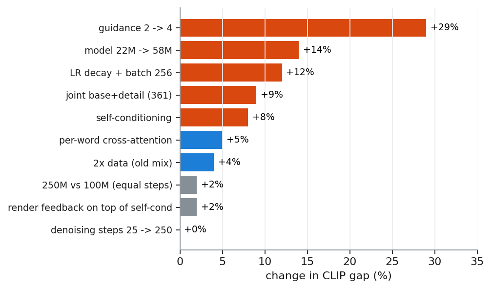
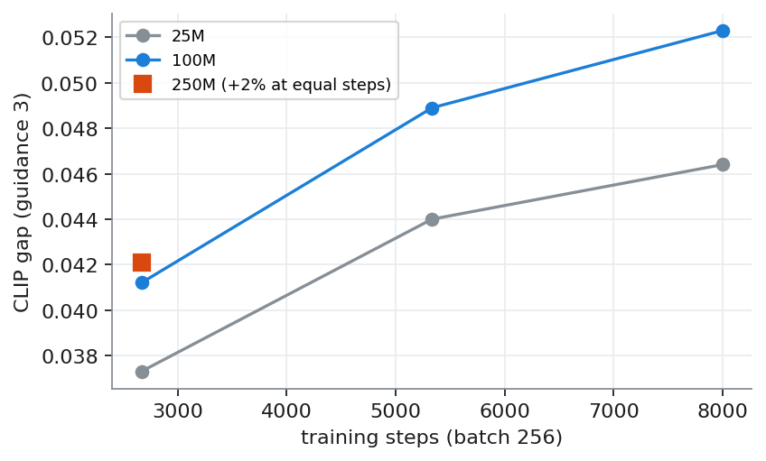
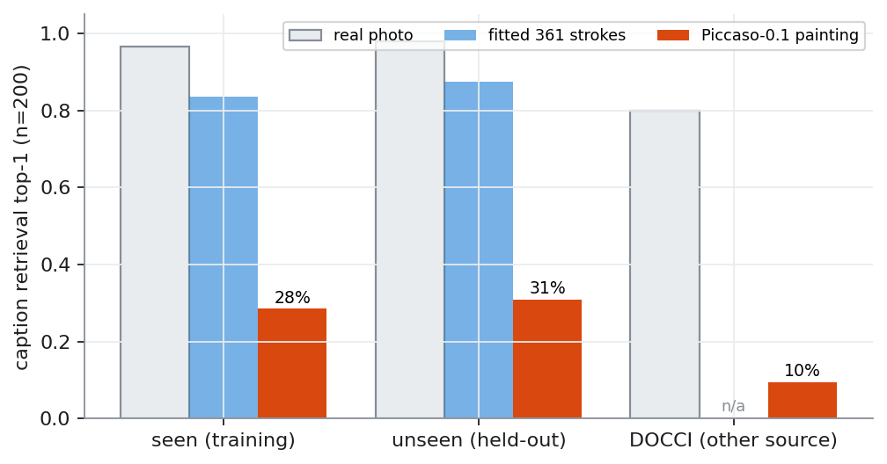
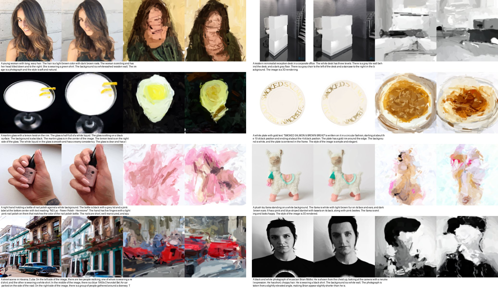
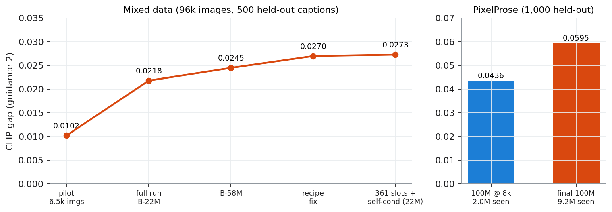
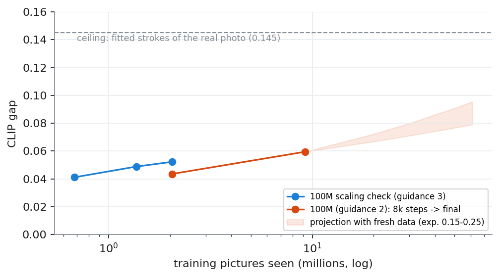

An open, early study of a 100M-parameter model that answers a text prompt with 361 brush strokes instead of pixels
Image generators produce hundreds of thousands of pixel values per picture. A painter produces a few hundred brush strokes. This report asks a curiosity question: is it easier for a small model to paint a picture than to make one? We convert real images into a fixed set of 361 quadratic Bezier strokes with a differentiable renderer, train text-conditioned models to generate those strokes, and document every step, including the dead ends. Generating one stroke at a time loses clearly to diffusion over the whole set of strokes. The final model, Piccaso-0.1 (102M parameters, Long-CLIP text encoder, self-conditioning, cross-attention), was trained on 232k PixelProse images for about 9.2M picture-views. On held-out captions it picks out its own caption among 200 candidates 31% of the time (chance 0.5%), performs the same on seen and unseen captions, and beats every earlier model in this project on objects and colour in a fixed prompt benchmark (right object in CLIP's top-5: 56%, right colour: 97%; style is level). The stroke format caps realism at about the quality of a quick oil sketch, and the model currently reaches roughly half of that ceiling. The whole project cost about $65 of rented GPU time. This is an early research preview: interesting, honest, and not yet useful as a product. Every number, failure and lesson is in the open notebook.

This project started as pure curiosity. Diffusion models learn to produce every pixel of an image. Human painters do something different: a handful of big strokes for the composition, then smaller ones for form, then a few for detail. A painting of a lighthouse at sunset is perhaps a few hundred decisions, not two hundred thousand. So: if we ask a model to output brush strokes instead of pixels, is the learning problem easier? Would a tiny model, trained for very little money, get further than one would expect?
The appeal of the stroke representation goes beyond size. The output is a real vector painting: it re-renders sharp at any resolution, every stroke can be edited or recoloured, the painting process itself is the animation (coarse strokes first, details last), and the whole picture is about 4,000 numbers. The cost is equally clear: a few hundred opaque strokes cannot reproduce photographic detail, so the ceiling is painterly by design.
We did not answer the question definitively. We did learn a lot about what makes stroke generation learnable, where it fails, and what it would take to push it further. This report is the complete record.
Image to strokes. Stroke-based rendering has a long history, from greedy painterly rendering (Hertzmann, 1998) to learned painters: Learning to Paint (Huang et al., 2019) trains a reinforcement-learning agent with a neural renderer, Paint Transformer (Liu et al., 2021) predicts stroke sets feed-forward, and Stylized Neural Painting (Zou et al., 2021) optimises strokes directly. All of these copy a given picture; none of them generates from text.
Generating strokes. Sketch-RNN (Ha and Eck, 2017) generates doodles pen-stroke by pen-stroke. CLIPDraw (Frans et al., 2021) and StyleCLIPDraw optimise strokes against CLIP for each prompt, which takes minutes per image. Collaborative Neural Painting (Dall'Asen et al., 2023) is the closest precedent: a class-conditional diffusion transformer that works directly in stroke space and found that per-parameter discrete tokens fail while diffusion over one continuous vector per stroke works. Vector-graphics generators (IconShop, StrokeNUWA, OmniSVG) target icons and SVG with large language models.
Diffusion and text conditioning. We use a DiT-style transformer (Peebles and Xie, 2023) with adaLN conditioning, v-prediction and a cosine schedule, DDIM sampling (Song et al., 2021), classifier-free guidance (Ho and Salimans, 2022), self-conditioning (Chen et al., 2022, "Analog Bits"), and PixArt-style cross-attention to caption tokens (Chen et al., 2023). Text comes from CLIP (Radford et al., 2021) and later Long-CLIP (Zhang et al., 2024), which extends CLIP's 77-token limit to 248.
Captions and data. DALL-E 3 (Betker et al., 2023) showed that detailed synthetic captions substantially improve prompt following. We use PixelProse (Singla et al., 2024; Gemini captions for web images), DOCCI (Onoe et al., 2024; long human descriptions) as a test set, and earlier COCO, QuickDraw, WikiArt, Cleveland Museum of Art, PD12M and emoji sets with Florence-2 captions (Xiao et al., 2024). The efficiency comparison in Section 8 uses MobileDiffusion (Zhao et al., 2023).
Each stroke is a quadratic Bezier curve with 11 numbers: start, control and end point (6), width (1), RGB colour (3) and an on/off bit. Strokes are opaque with a fixed soft edge and are painted in order with a differentiable rasteriser (batched.py). To turn a real image into strokes we fit them by gradient descent against the image, coarse to fine.
Three findings shaped everything that followed:


We trained both arms on identical data. Arm A is the intuitive "painter": it places one stroke at a time and looks at its canvas. Arm B treats the 361 strokes as a set and denoises all of them together, like an image diffusion model over a 361 x 11 "image".
A memorisation test (each training picture gets its own id) showed that both arms can redraw their training pictures almost exactly (64 pictures: B 26-28 dB, A 31 dB, all identified; 1,024 pictures: B 99%, A 92%), so the loss is sound and the problem is generalisation. With text and real data, B won every time:
| Data | Arm A (stroke by stroke) | Arm B (set diffusion) |
|---|---|---|
| 16k sketches and emoji, class labels (classifier accuracy) | 0.40-0.80 | 0.97 |
| 6.5k mixed images, CLIP captions (top-1 of 96) | 0.000 | 0.042 |
| 96k mixed images (CLIP gap, 500 held-out) | 0.0108 | 0.0245 (58M) |
Why: B sees and revises every stroke at every denoising step, so an early mistake can be undone. A commits to each stroke once; its errors compound inside a picture (visible in the memorisation sheets as snowballing artefacts), and it was data-starved at every scale we tried. Arm A is retired, not deleted: the stroke-by-stroke angle remains interesting for animation and interactivity.
Round one: a mixed 96k set. QuickDraw doodles, four emoji and icon sets, COCO scenes plus object and face crops, Cleveland Museum of Art, WikiArt and PD12M, captioned with Florence-2 and filtered with CLIP. The best model drew its first recognisable objects (smileys, houses, apples, red buses) but analysis showed that about 35% of the data carried captions that barely describe the picture (WikiArt "genre painting, Impressionism", museum titles, generic face-crop captions). Doubling this data gave only +4%.
Round two: PixelProse only. PixelProse provides dense Gemini captions for web images ("A red chili pepper. It is oriented vertically. The chili pepper is in front of a large flame. The background is black..."). A probe on 1.5k images per candidate dataset (Figure 2) made the choice obvious. The final pipeline:

Every lever was measured in isolation with the same evaluation: generate a painting for each held-out caption, then check with CLIP ViT-B/32 whether the painting matches its own caption better than the others (top-1 retrieval and the CLIP gap, own-caption similarity minus other-caption similarity). Figure 5 summarises the effect sizes.

| Experiment | Result | Decision |
|---|---|---|
| Denoising steps 25 / 50 / 100 / 250 | gap 0.0241 / 0.0242 / 0.0235 / 0.0242 | 25 steps |
| Guidance 2 -> 3 -> 4 | +18% / +29% | use 3-4 |
| Learning-rate decay + batch 256 (bug fix) | +12% (58M), +9% (22M) | new recipe |
| Data 25% -> 50% -> 100% (old mix) | +19%, then +4% | quality over volume |
| Separate detail model on top of the base | never beat the base alone against real pictures | dropped |
| Base and detail generated jointly (361 slots) | +7-10% overall; faces +64%, Cleveland +40% | keep |
| Self-conditioning | +7-8%, every source | keep |
| Model sees its own 64 px render each step | +4% at guidance 2, equal at 3-4, 1.9x the cost | dropped (for now) |
| Cross-attention to caption tokens (short captions) | +4-5% | keep for long captions |
| 565 instead of 361 slots (fitted ceiling) | +1 dB, +3% caption match | stay at 361 |
Same data, settings and number of steps for all three sizes, scored at matching checkpoints. 100M clearly beats 25M (+13% at 8k steps). 250M was only +2% at 2.7k steps and level on the prompt benchmark at 5.3k steps, while costing 2.5x per step. At this data scale, 100M is the right size; a larger model should pay off only with much more data.

| Component | Choice |
|---|---|
| Output | 361 strokes x 11 numbers (165 base on 4x4/7x7/10x10 grids + 196 detail on 14x14) |
| Network | set diffusion transformer, width 640, 11 layers, 10 heads, adaLN, 102M parameters |
| Text | Long-CLIP-B (frozen): pooled vector via adaLN + cross-attention to up to 248 caption tokens |
| Extras | self-conditioning; 25% of training steps conditioned on the reference image's Long-CLIP vector |
| Objective | v-prediction, cosine schedule, slot loss weights 3 / 1.5 / 1 / 1 (coarse to detail) |
| Training | 8k steps at batch 256 (2 GPUs), then 7k steps at batch 1,024 (8 GPUs, lr 5e-4, cosine): ~9.2M picture-views, about 40 passes over 220k training images |
| Sampling | DDIM, 25 steps, guidance 3, stroke count copied from a random real painting |
To check generalisation we drew 200 captions from the training set, 200 held-out captions and 200 DOCCI images with long human-written captions from a different photo source. For each we score the real photo, its fitted strokes (the ceiling) and Piccaso's painting.
| Caption retrieval among 200 (top-1 / CLIP gap) | Real photo | Fitted 361 strokes | Piccaso-0.1 |
|---|---|---|---|
| Seen: training captions | 96.5% / 0.191 | 83.5% / 0.142 | 28.5% / 0.072 |
| Unseen: held-out PixelProse captions | 98.0% / 0.194 | 87.5% / 0.146 | 31.0% / 0.069 |
| DOCCI: other source, human captions | 80.0% / 0.151 | n/a | 9.5% / 0.046 |


CLIP retrieval is a coarse compass, so we also built StrokeBench: 200 fixed prompts in four groups (80 single objects, 40 colour plus object, 40 two-object scenes, 40 styles), each checked by CLIP multiple choice.
| StrokeBench (4 samples per prompt) | chance | A1 (22M, old data) | B-58M (old data) | Piccaso-0.1 |
|---|---|---|---|---|
| Right object, top-1 of 80 | 1.3% | 18.1% | 22.5% | 30.3% |
| Right object, top-5 of 80 | 6.3% | 45.0% | 50.6% | 56.3% |
| Right colour (of 10) | 10% | 82.5% | 80.0% | 96.9% |
| Object right in colour prompts (top-5) | 6.3% | 43.8% | 38.8% | 53.8% |
| Both objects in two-object prompts (top-5) | 0.4% | 2.5% | 3.8% | 4.4% |
| Right style (of 5) | 20% | 46.3% | 43.8% | 45.6% |

Painting speed: 0.11 s per painting on an RTX 5090 (batch 50, 25 steps) and about 93 s on a laptop CPU (Intel i7-1255U, 25 steps, no GPU). The CPU number is the honest "runs locally" figure today; few-step distillation (Section 10) is the obvious fix.
It does not, yet, and the gap is mostly not about strokes. MobileDiffusion generates 512 px images on a phone in about 0.2 s, with this budget:
| MobileDiffusion (Zhao et al., 2023) | Piccaso-0.1 | |
|---|---|---|
| Unique training images | 150 million | 232 thousand (about 650x fewer) |
| Training | ~1M steps on a TPU pod, plus a 15-day search on 512 TPUs | 15k steps on consumer RTX 5090s, about 8 GPU-hours for this model |
| Generator | 386M UNet + CLIP-L + learned latent decoder | 102M transformer + Long-CLIP-B + fixed stroke renderer |
| Output | a learned latent (64x64x8) decoded to pixels | 361 vector strokes (about 4k numbers) |
| Sampling | 8 steps, or 1 step after diffusion-GAN finetuning | 25-50 steps x 2 for guidance (not distilled) |
| Rough cost | hundreds of thousands of dollars of compute | about $65 for the entire project |
Strokes do cost something: the fitted ceiling caps realism, and a set of overlapping strokes lacks the grid structure that convolutions exploit. But the dominant differences are data (650x) and compute (roughly 1000x). The useful lessons to borrow are few-step distillation, a hierarchy-aware network (attention only at coarse levels) and simply more data.
The learning curve (Figure 10) followed a clean power law in training pictures seen (about +15% CLIP gap per doubling). Projected with fresh data:
| Plan | New images | Steps at batch 1,024 | Est. cost | Projected gap | Projected top-1 of 1,000 |
|---|---|---|---|---|---|
| Today | - | ~9k equiv. | - | 0.0595 | 11% |
| Same data, +20k steps | 0 | ~29k | ~$9 | 0.065-0.070 | 13-16% |
| +500k images | 500k | 50k | ~$55-60 | 0.075-0.085 | 17-22% |
| +1M images | 1M | 60k | ~$95 | 0.080-0.090 | 20-25% |

Beyond scale, in order of value per effort: few-step distillation (4-8 steps, guidance baked in) for laptop and phone speed; a 512 px finishing layer fitted where the error is high, generated by a small cascade finisher that looks at the rendered base painting; variable opacity and edge softness for glazes, skin and glow; a hierarchy-aware network with full attention on coarse strokes and local attention on detail; and a larger model once the data reaches millions of images. PixelProse alone has about 8M more usable images.
All experiments ran on rented consumer GPUs (Vast.ai RTX 3090/4090/5090, a RunPod A40 early on). Every full run was preceded by small dry runs, which caught real bugs each time: a duplicate filter that merged different doodles, an inverted watermark filter, a missing learning-rate decay, out-of-memory errors that only real captions triggered. We also lost about $6.50 of GPU time to operational mistakes (a kill command that also killed follow-up jobs, a fork-after-CUDA deadlock, an idle box after a silent destroy failure), which led to a hard rule: audit every rented GPU every 10 minutes. The full lab notebook, with every plan, result and decision in order, is in the repository (notebook/).